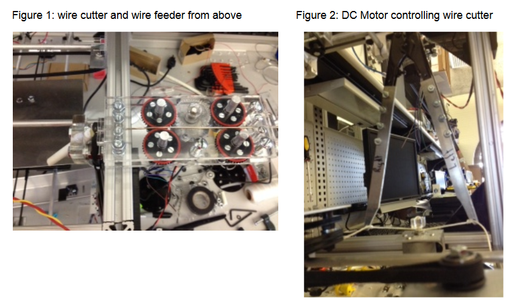

The flux dispensor is controlled by a single DC motor which is connected to a rack and
pinion. The motor's rotation is converted into linear movement that pushes a pluger in
a syringe down. The optical encoders in the DC motor allow for precise control in the
amount of flux that is despensed at a time.
The wire feeder uses a single DC motor to turn four wheels with rubber bands in the same
direction (see Fig. 1). The front and back of the feeder of a slot to control the direction
that the wire enters and leaves from. THis ensures that the wire will go
directly in front of the wire cutter. The cutter head can be seen to the left of
figure 1. The piece of wire then falls into a white PVC pipe which takes the wire
to the revolver. In figure 2 we can see the motor that is controlling the wire cutter.
The motor pulls two pieces of string to the center of the motor to close the cutters.
